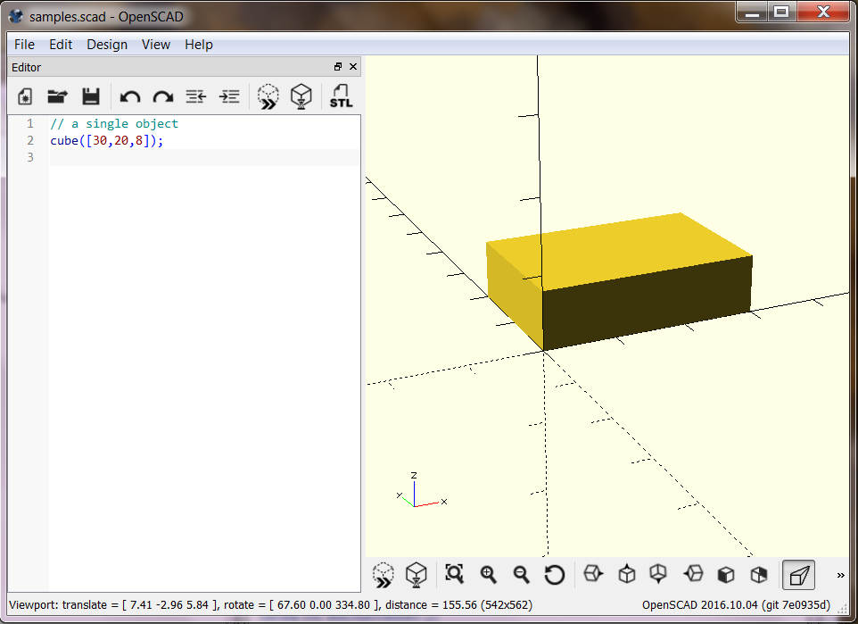

OpenSCAD - Code Examples¶
Application window¶
This is the OpenSCAD user interface. No details explained here. The windows shows the script and a view of the resulting model. With a mouse click or the F5 key, the view gets refreshed.
Basic 3D objects¶
A model is created from a few basic objects, which are transformed and combined with a number of powerful operations. To achieve a certain result, there are usually different possible ways to combine the elementary objects.
Simple object: Cube¶
A first basic object: a cube:
cube([30, 20, 8]);
A simple cube requires 3 dimensions as a vector (a list of values between brackets)
Position of an object¶
Objects are placed into a cartesian coordinate system, where each point can be expressed as a value on the 3 axis X, Y and Z. Coordinate values may have a positive or a negative sign. All objects start at the origin (x=y=z=0).
cube([30,20,8], center=true);
The initial position of a cube can be defined by a corner or by its center.
Simple combination of objects¶
Defining more than one object may give a combined object. This is called a ‘Union’:
cube([30,20,8]);
cylinder(d=15, h=12);
A union is a new object, which can be handled like a basic object.
Using colors¶
We may add colors to objects, to visualize them better:
cube([30,20,8]);
color("blue") cylinder(r=4, h=20);
color("red") sphere(r=8);
Colors are only for the visualization. They do not affect the final output. Colors can help a lot when working with more complex models.
Again: Default position¶
Each object has its default anchor point, some objects have a ‘center’ option:
cube([30,20,8], center=true);
color("blue") cylinder(r=4, h=20, center=true);
color("red") sphere(r=8); // spheres are always centered
Modification of Objetcs (Operations)¶
To change objects, we use “operators”. We already saw one operator: color(), which changes only the appearance of an object. We will start with operators, that change the position of objects.
move to a new location: translate()¶
translate changes the position of an object. It requires a verctor with 3 numbers, which define the movement along the X, Y and Z axis:
color("silver") cube([50,50,3], center=true);
color("blue") cylinder(d1=12, d2=4, h=20);
translate([15, 15, 0]) color("yellow") cylinder(d1=12, d2=4, h=20);
translate([ 0 ,-25, 0]) color("green") cylinder(d1=12, d2=4, h=20);
translate([-23, 23,-7]) color("violet") cylinder(d1=12, d2=4, h=20);
We can se cylinders with different diameters for the top and bottom plane.
Module definitions¶
To make the following examples shorter and easier to understand, we make side step and introduce modules here. A module is a new name for a seld-defined object. We define an arrow object, and use it.
This is the definition:
module arrow(cor) {
color(cor) {
cylinder(d=2, h=10);
translate([0,0,9]) cylinder(d1=2.5, d2=0, h=3);
}
}
here we use (call) it:
arrow("red");
in the following examples, we will not repeat the above definition.
Turn objects upside down¶
rotate() turns a object around the 3 axes, the parameter is a vector of 3 angles. We use the arrow module for the rotation examples:
arrow("red");
rotate([0,90,0]) arrow("blue");
rotate([0,-20,0]) arrow("green");
When more than one angle is specified, the rotations happen one by one in x/y/z sequence:
arrow("red");
rotate([20, 59.99, 40]) arrow("blue");
rotate([ 0, 0 , 40])
rotate([ 0, 60 , 0])
rotate([20, 0 , 0]) arrow("yellow");
The above example might require some meditation :)
Rotation is always based on the main axles. This has consequences. The sequence of operations matters:
color("silver") cube([80,30,1], center=true);
arrow("red");
translate([15,-10,0]) rotate([0, 50, 0]) arrow("gold");
rotate([0, 50, 0]) translate([15,-10,0]) arrow("blue");
The mirror¶
There is a mirror operation. Imagine a mirror as a plane through the origin. The orientation of the mirror is vertical to the given vector. As long as the mirror is just paralel to the main axes, things are easy. To illustrate the effect of mirroring, we can introduce the text object:
color("red") text("abcde");
mirror([1,0,0]) text("abcde");
Changing the size of an object¶
The scale operation takes every point of the object and multiplies its position relative to the origin. Sounds complicated, and it can be. A simple example first:
color("red") cylinder(d=20, h=12, center=true);
scale([2, 0.8, 0.4]) cylinder(d=20, h=12, center=true);
Scaling combined with rotation lets us create all kinds of shapes:
color("green") cube([20,10,8], center=true);
scale([2, 1, 0.5]) rotate([0,0,45]) cube([20,10,5], center=true);
Boolean combinations¶
The title sounds worse than what is really is. We already used the boolean operator union() =’or’, which is the implicit combination of objects. The final object simply consists of the sum of its parts.
The shortest illustration of boolean operations is this:
On the left side we see an Intersection, where the result consists of only those points, that are part of all the involved parts.
On the right side we se the Union, where the where the result consists of all points, that are part of any of the involved parts.
On top there is the Difference, where second part is subtracted from the first.
Make the Difference¶
The next example shows two tubes. The blue one has kind of a blurred opening. That is because a difference of the inner and the outer tube is close to zero. It should always be defined as non-zero. This is why for the red tube we use a little extra size for the subtracted cylinder:
difference() {
color("blue") rotate([90, 0, 0]) cylinder(d=10, h=50, center=true);
color("white") rotate([90, 0, 0]) cylinder(d= 8, h=50, center=true);
}
gap=0.01; // extra size to make difference explicit
translate([20,0,0])
difference() {
color("red") rotate([90, 0, 0]) cylinder(d=10, h=50, center=true);
color("white") rotate([90, 0, 0]) cylinder(d= 8, h=50 + gap, center=true);
}

More Tube examples¶
Let’s make a union of tubes. We try to use a tube module:
gap=0.01;
module tube(diam, wall=1, length=50, cor) {
difference() {
color(cor) cylinder(d=diam, h=length, center=true);
color("white") cylinder(d=diam-2*wall,
h=length+gap, center=true);
}
}
And then combine 3 tubes:
rotate([90, 0, 0]) tube(diam=10, cor="red");
rotate([90, 0, 60]) tube(diam=10, cor="blue");
rotate([90, 0,120]) tube(diam=10, cor="gold");
Did we get, what we wanted? - Let’s check! We cut out a piece of the tubes, so we can look inside:
difference() {
union() {
rotate([90, 0, 0]) tube(diam=10, cor="red");
rotate([90, 0, 60]) tube(diam=10, cor="blue");
rotate([90, 0,120]) tube(diam=10, cor="gold");
}
cylinder(d=30, h=10); // just for testing: cut out from the tubes
}
Maybe we rather wanted, to have the tubes open completely. In this case, out tube module is not the right thing. A different approach is, to make the tube module more flexible. This is where a little bit of programming comes in - we use the if/else instruction:
gap=0.01;
module tube(inout, diam, wall=1, length=50, cor) {
if (inout == "outer") {
color(cor) cylinder(d=diam, h=length, center=true);
} else {
color("white") cylinder(d=diam-2*wall,
h=length+gap, center=true);
}
}
difference() {
union() {
rotate([90, 0, 0]) tube("outer", diam=10, cor="red");
rotate([90, 0, 60]) tube("outer", diam=10, cor="blue");
rotate([90, 0,120]) tube("outer", diam=10, cor="gold");
}
rotate([90, 0, 0]) tube("inner", diam=10);
rotate([90, 0, 60]) tube("inner", diam=10);
rotate([90, 0,120]) tube("inner", diam=10);
cylinder(d=30, h=10); // just for testing: cut out from the tubes
}
This is the right result. But the code looks repetitive, which is ugly. With a little bit more of programming, we get it DRY. Let’s use a for-loop:
angles = [[0, "red"], [60, "blue"], [120, "gold"]];
difference() {
for (ang = angles)
rotate([90, 0, ang[0]]) tube("outer", diam=10, cor=ang[1]);
for (ang = angles)
rotate([90, 0, ang[0]]) tube("inner", diam=10);
cylinder(d=30, h=10); // just for testing: cut out from the tubes
}
The result is exactly the same, but the code is shorter, which is mostly better.
The hull() operator¶
One last powerful operator is hull(). It creates an object, that appears like the shrink-wrapped objects that are included. A short example:
module obj1() { translate([50, 0, 0]) color("blue") cube([5,8, 12]); }
module obj2() { translate([0, 50, 0]) color("red") cylinder(d1=0,d2=15,h=12); }
module obj3() { translate([0, 0, 0]) color("green") sphere(d=10); }
module obj4() { translate([15,15, 30]) color("black") rotate([90,0,45])
cylinder(d=1,h=20); }
obj1(); obj2(); obj3(); obj4();
translate([20,20,0]) union() {
// color("cyan") hull() {obj1(); obj2(); } // is included in the last hull
color("maroon") hull() {obj2(); obj3(); }
color("pink") hull() {obj3(); obj1(); }
color("cyan") hull() {obj1(); obj2(); obj4();}
}
The example is of course only of pedagocical value. The result is shown here from different angles.
The Parametric thing¶
We still had no good example, where the use of parameters gave us a big advantage. Here cames the OpenSACD Model of a box, where every aspect of the final result can be modified, by just specifying a few parameters:
// outer dimensions
odim_x = 110; // length - the hinges for the tap are along this edge
odim_y = 80; // width
body_z = 22; // height of the body
tap_z = 8.5; // height of the tap
odim_z = body_z + tap_z; // height of the box with tap
owall = 2.0; // thickness outer walls/top/bottom
iwall = 1.2; // thickness inner walls (for the dividers)
top = 1.3; // thickness of the tap wall
// dividers, n = trays, n-1 = inner walls, [1] or [] means: no dividers
div_x = [7,4,5]; // relative size of frays
div_y = [3,2];
div_height = body_z;
body(); // generate to body part for 3D printing
// tap();
We can easily change the size of the box or change the internal dividers. Try these modifications, to get a completely different box:
odim_x = 160; // length - the hinges for the tap are along this edge
odim_y = 120; // width
body_z = 12; // height of the body
// dividers, n = trays, n-1 = inner walls, [1] or [] means: no dividers
div_x = [6,3,3,3,6]; // relative size of frays
div_y = [1,1,1,1];
Note, that even the number of hinges depends on the size of the box.
- The source code of the box is here:
- http://hans-boden.github.io/img_oscad/divibox.scad